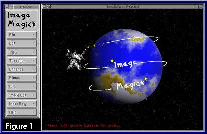

After months of procrastination, I finally got around to taking
a closer look at the ImageMagick set of tools from John Cristy and E.I.
DuPont De Nemours and Company Incorporated. I've had a number of
readers write and ask me about the program, what I thought of it and how
does it work, etc. Its time to address some of those issues.
ImageMagick is a graphics manipulation tool along the
lines of XV or the GIMP that runs on a variety of Unix systems, including
Linux, along with MS and Macintosh platforms. The package is available
in source or binary distributions from http://www.wizards.dupont.com/cristy/ImageMagick.html.
I downloaded the binary package which was a gzipped tar file of the
installation package using relative paths. Since the package attempts
to place the binaries and some other files under the /usr/X11R6 directory
tree, and I only install system files there (everything else goes under
/usr/local), I had to unpack the file in a local directory tree, change
the name of the X11R6 directory to local, recreate the tar file and then
unpack it as root from the root (/) directory. Other than this, the
installation of the binary package was painless.
The distribution comes with a set of 9 tools that allow
both interactive and command line editing of images: 
display
import
animate
montage
convert
mogrify
identify
combine
xtp
All of the tools come with well written man pages and honor the -? command
line option to get usage summaries.
The first of these, display,
is an interactive program that uses X Windows. The interface is consists
of a single, columnar set of buttons, each of which opens a menu, and a
viewing window. Figure 1 shows the default image window and
the menu box.
The image window will dither images to fit on the display based on
the hardware support you are using.
The menu buttons are simple to use - just click on one
to see the options available for that menu. The top level menu options
are:
File - file functions
Edit - undo, redo, etc.
View - affects image size
Transform - rotations, shear, flip, crop, etc.
Enhance - brightness, hue, saturation, etc.
Effects - despeckle, sharpen, blur, solarize, etc.
F/X - swirl, implode, oil painting, etc.
Image Edit - add borders and frames, edit colors, etc.
Miscellany - image info, slide show, histogram, etc.
Help - extensive help system, including some HTML based documentation
Under File the options include such things as a Print function (using Postscript,
so you'll want to make sure you have Ghostscript installed first), New,
Open, Next, Former, and Visual Directory, among others. The Visual
Directory appears much like the Open option in that both provide a File
Selection box from which to choose an image. I'm not certain if I
was using it correctly, however, since I got the feeling the visual directory
is supposed to be similar to XV's visual schnauzer.
The Effects and F/X menus are similar in that both provide
access to features that manipulate the image, much like XV's algorithms
or the GIMP's plug-ins. I found the Shade function interesting in
that it turned the 2D planet into a slightly 3D image by adding shadows
in the appropriate places. Most of the functions are similar to the
features found in the stock GIMP distribution but there are a few more
than what XV provides in its algorithms menu.
The number of features of the display program is attractive,
but as an image editing tool for artists it is a step or two behind the
ease of use of the GIMP. Some of the effects features are a little
nicer than what is currently available for the GIMP, however. And
the annotate feature, which allows you to insert text into an image, does
provide a reasonable font previewer. Still, the GIMP is a more sophisticated
end-user interface. During my brief testing of display I had multiple lock
ups on my Linux 1.2.13 box, but that may be due to older libc. I
also noticed that display appeared to run a bit slow in refreshing the
image window. Redraws of the windowing toolkit (looks a bit like Tk or
Motif, but I'm not certain what it is really) were really slow. Again,
this may be due to my slightly older Linux system.
Beyond the graphical interface, the other 8 programs in
the distribution are command line oriented. From what I can gather
this is what makes ImageMagick a valuable addition to the Linux graphics
artists toolchest. Each of the commands serves a general purpose but handles
that purpose with an extensive array of options. As a group these
tools can be used to automate the handling of images for display on web
pages quite nicely. I think that many of the features builtin into
the display program are covered by these command line interfaces, but I
also found a few features that I think display may not handle.
Import is used to
do screen captures of windows or rectangular regions of your monitors display.
You can specify an window ID or name or you can use import interactively
by using the mouse to specify the window or region to capture. Options
include allowing capture of the window manager frame, dithering and cropping
the image before saving. The output file format depends on the filename
extension used for the saved file or by prefixing the filename with the
file type followed by a colon, such as ps:output_image.
By default import will save the file as an Encapsulated Postscript file.
Animate will take
a series of images in just about any format and display them as an animation.
As with most animation software the quality of the animation will depend
on the number and type of images, the speed of the computer and the memory
available to process the images. Since I didn't have a series of
images to experiment with I wasn't able to really look into this particular
tool.
Montage allows you
to create a single image built from a series of other images. Input
images are scaled to fit a specified tile size, a square of 120x120 by
default, and then places the images side by side in a series of rows. By
default 5 tiles are used in a row and 4 rows are produced. If more
than 20 images are supplied then additional output montages are produced.
You can specify a larger number of tiles to use for a single montage, and
thus the number of input images to use, with the -tile
option. Montage offers a large set of options. The page size
can be set so that the postscript output will fit on various paper sizes.
You can set the gamma level for the output files, crop and dither the input
images, provide an ornamental frame around the output image, and where
to place an image inside a tile if it doesn't fill the entire tile region
(this is known as where the image will gravitate within the tile).
Input files can be identified with labels using various fonts. 3D
shadows can be added to input images as well as a textured backdrop in
the tile areas and borders not covered by input images.
Convert and Identify
are complimentary programs. Identify can be used to determine,
based on the files magic number, the image format of a particular file.
Along with the file type information such as the size of the file, whether
or not it is colormapped, and the number of colors in the image are also
printed. Convert takes an image in one format and converts it to
another file using a different, specified format. The format type
can be specified just as with import, with a prefix or suffix denoting
the format of the input and output types. Convert can also read Unix
compressed (.Z suffixed) image files, but does not write the converted
image as a compressed file. Multipage or multipart images are converted
with output files using the filename with a scene number for a suffix.
This is a modifiable option, however. You can embed a printf() style
formatting string in the output file name to sequentially number the images
and still include the format type as a suffix.
Mogrify manipulates
images the way the Effects and F/X menu options in display do. This
tool takes an input file and processes it based on the options specified
and in the order they are specified. Since options are processed
in the order they are presented on the command line, it is possible to
set a series of options to be globally applied to a series of images, then
change one or more of these options for individual images - all from a
single command line. Mogrify permits scripting and batch processing
of images. XV can do this to some extent, but I've never used it
that way and the number of processing functions is greater in mogrify.
The GIMP has a scripting interface, but batch processing has to go through
Net-FU (a network based interface). NetPBM provides only command
line interfaces, but you have to script a series of programs together to
get the same effect you get from mogrify. Image Alchemy, a commercial
product for image processing from Handmade Software, appears to be the
only real match for the way mogrify functions for batch processing.
Finally, the ImageMagick tool set includes an extra feature
- xtp - which allows for network transfer of files simiilar to the way
ftp works. According to the ImageMagick web site, xtp doesn't require
any interactive commands so file transfers can more easily be batch processed.
Beyond the base tools, John Christy and E.I. Dupont De
Nemours and Company also provide a plug-in package called the ImageMagick
Plug-In. This appears to be (although I'm not quite clear about it)
the shared image libraries for a number of popular image file formats.
It is basically equivalent to what libgr provides except that the ImageMagick
libraries include support for MPEG files. There are also a number
of programs in the Plug-In packages, including a TIFF thumbnail generator
and the cjpeg and djpeg tools for compressing and decompressing images
to and from the JPEG format. Most of the tools in the Plug-in package
are related to TIFF handling.
As you can see the ImageMagick tools cover a lot of ground.
I didn't get to comparing the quality of the images from ImageMagick versus
XV or NetPBM so this review is really just an introduction to the toolset.
But the tools are obviously high quality, feature rich, and well documented.
The developers announce frequent updates and additions which is better
than what you generally hear of XV or NetPBM. If you've used XV,
the GIMP or NetPBM and find these might not quite fill all your needs you
owe it to yourself to take a look at ImageMagick. No graphics fanatics
arsenal of tools is ever complete and no tool can handle every need.
Its important to keep aware of the tools that are available. ImageMagick
is a tool that deserves serious consideration for your collection of graphics
tools for Linux.